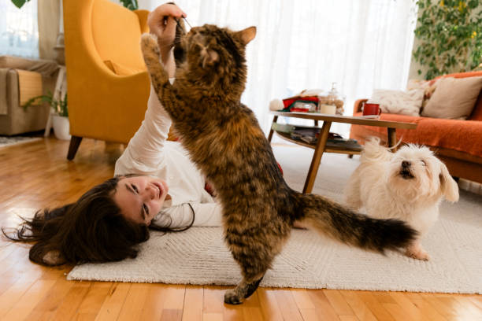
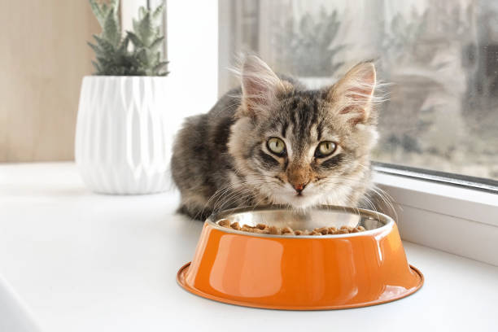
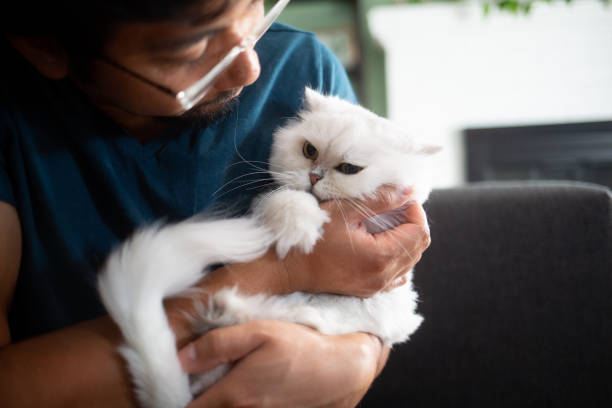

Cat Behavior & Needs
How to be a Reponsible cat owner
-
A Reponsible cat owner understands a cat emotional and physical needs:
- Know what you are getting in to before you adopt a cat .
- Reearch the needs of the different ages and stages ,and breeds before you choose a cat for your family. A Reponsible cat owner is committed to his furbaby no matter what:
- Even if kitty develops a health problem or Behavior problem
- Even if your life change and you move , get married , or have kids.
- if you can't provide for kitty anymore you find her a new home. You don't abandon her outside. A Reponsible cat owner keeps her cat safe:
- Catproof your house before bringing kitty home.
- Get rid of poisonous plants like lilies and toxic cleaners.
- Have a cat first-aid kit and know how to use it.
- Make disaster plan and have a go-bag ready. A Reponsible cat owner keeps his cat healthy:
- Spay neuter your pet.
- take your cat annually.
- Feed a quality diet.
- Know your cat.

Basic pet care for cat and kittens
-
FOOD
- KITTENS: feed kitten food ,and follow instruction on the bag for correct amount.Leave a bowl full of food for cat to eat throughout the day.
- ADULTS: feed adult foods , and follow the instruction on the bag for correct amount.Leave a bowl full of food for cat to eat throughout the day. WATER
- Cats can get dehydrated easily, so provide a fresh bowl of water every day. LITTERBOX
- Keep the little box clean by scooping out the poop daily. Keep it out of the reach of babies , young children ,and other animals like dog.
- If cats don't have a scratching post they might resort to your sofa. If you don't want to buy one , try using a cardboard box ,and replace with a new one weekly.
SCRATCHING POST

Tips About Feeding cats
